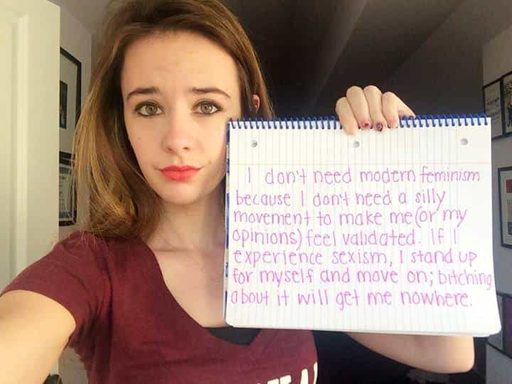
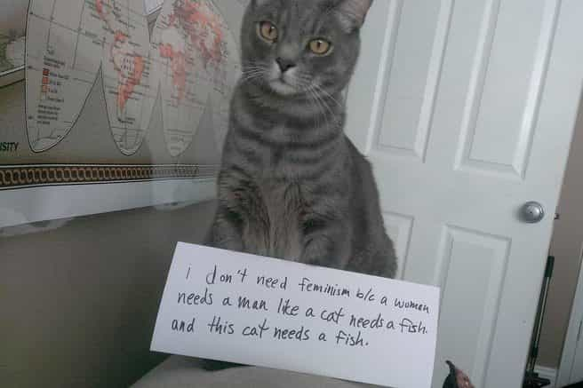

< < < Back
Feminism Has Lost The Minds Of Young Women – Return Of Kings
The idea that feminism is dead is gaining ground all across the west. One would like to think it is because of the trail blazing of the man-o-sphere, and to a great degree it is. But truly, the root of feminism’s death was in Man, capital M, from the very beginning. One look at Conan is all a man needs to know this truth.
Feminism is dead. The movement is absolutely dead.
The women’s movement tried to suppress dissident voices for way too long. There’s no room for dissent. It’s just like Mean Girls.
If they had listened to me they could have gotten the ship steered in the right direction. My wing of feminism—the pro-sex wing—was silenced. I was practically lynched for endorsing The Rolling Stones. Susan Faludi is still saying I’m not a feminist. Who made her pope?
Feminist ideology is like a new religion for a lot of neurotic women. You can’t talk to them about anything.
~ Camille Paglia on Rob Ford, Rihanna and rape culture for MacLeans.ca
Neurotic women indeed.
Paul Joseph Watson of Infowars/Prison Planet fame was bang on in his assessment of feminism at the end of 2014. But he may have underestimated his conclusions in my opinion.
Feminists did not just lose the debate, they lost the war.
The feminist attempt to demonize normal male/female behaviour in public—men initiating contact with a female with a hello and attempt to strike up a conversation—backfired in less than a month.
When you have a woman volunteer to walk down the street as Princess Leia, the QUEEN of 70’s patriarchal sexist ‘misogyny’, to ridicule feminists, you have lost the war for hearts and minds.
And when I say hearts and minds…
I mean the silent majority of young women who want NOTHING to do with feminism.
Leia makes it clear in this video that boys will be boys. So too will jawas, Darth Vader and even Yoda apparently, that sly dude. Who knew?
And that’s a good thing! Men and women are meant to interact and engage in romantic courtship. Feminists may hate this, but the vast majority of women still prefer, and expect, the man to take the initiative to get the girl. This is how men and women were created and evolved, you can’t fight Darwin and God and come out on top.
This video shows that the majority of NORMAL women LOVE male attention. They WANT men to look at them. They WANT men to notice them. Why?
THEY WANT A MAN!!!
I realized this is the case when I decided to google the fast rising phenomenon of women against feminism.

This image from the Women Against Feminism Tumblr page really hits home the loss for feminism. This woman was raped. She is not running around spreading lies like the UVA RAPE HOAX story that Rolling Stone ran and had to retract. She justs wants to go back to living a normal life. She does not want to be angry at ALL men for the crime of ONE of them. She does not want to demonize all men in some sad attempt to get revenge. She does not want to be a victim.
Feminists have lost the female youth of Millenials, the very generation that is supposed to obliterate the patriarchy completely in the 21st century.
I understand some men who are still angry over feminism may proclaim these women are doing nothing more than crying for sympathy and attention now that Millenial men have become vocal, blunt and merciless in their attacks against feminism and the current generation of ‘women’ it has reared. The problem with this type of knee-jerk reaction is just that—you’re being a jerk. Yes, far too many western women for comfort are no good for a relationship anymore. But, that does not also translate into there being no young women who are not just as frustrated and angry at feminism as you are and the feminists who claim to speak for them.
Young women might not think about it as much since feminism has clearly made the road to independence (an illusion) easier for them to choose, but these women are taking note that men are completely ignoring them now that they have surpassed men in almost all aspects of western society.
Case in point.
I met a wonderful young Russian blonde a little while back. Twenty-three. Tight. Feminine. So freaking perfect. We hit it off immediately on first contact. Having myself only traveled outside the west twice, I still primarily meet foreign women in my own country and every time I do, I am blown away by their immediate friendliness and ease in my company compared to western girls. As I conversed with this well educated and refined young Russian lady, she told me she was attending university and so naturally, I asked her what she noticed most about the boys on campus compared to back home.
Her answer was revealing…
Boys? They completely ignore the girls. Don’t even look at them. Just walk on by.
This really surprised her. Being a feminine Russian girl who expects men to look at women, this behaviour by western men was completely alien to her.
Men, young boys, in their prime 20s, completely ignoring women on campus as they go about their day.
According to Wikipedia, women against feminism started on Tumblr in 2013. I see #WomenAgainstFeminism as a sign that many young women are fed up with feminism and male bashing in western society. It is not a sign of women speaking with two faces and trying to work both sides of the gender war to their advantage. All you have to do is look into the eyes of this young woman to know just how desperate these girls are for a real relationship, one with love and respect.

I don’t think men realize how significant a movement like women against feminism is.
As men, we are naturally comfortable with open conflict and expressing not just dissenting, but offensive opinions. The very existence of women openly declaring they are rejecting feminism, and risking social ostracism in a wholly feminist dominated university climate, is why feminists are hyperventilating and going into ape-shit, mentally insane overdrive mode to try and salvage what support they have left. Here are just a few mainstream articles trying to push the meme feminism is not dead and just needs a ‘generational’ adjustment.
With all the knowledge men have now on the nature of women, we still have women who are speaking out against feminism. The nature of women with respect to speaking out and taking an unpopular position socially is pretty clear, even to women themselves.
What women strive for most in their lives is non-confrontation and avoidance of conflict.
Women (ok, normal women) want harmony, peace, love and happy relationships.
Coming out against feminism is not easy for a lot of girls. You may think it is, but you must put yourself in the soul of a woman and remember how important relationships and being liked and connected is to them. Women don’t want to rock the boat. They don’t want to make enemies. They don’t want to create bad feelings among family, peers and co-workers. This is female nature and sounds odd to men because it is odd… it is not how we are wired.
As 2014 came to a close, something I think began to become very clear for a lot of Millenial women.
A growing number of Millenial women are beginning to notice that young men, the ones they want to date and marry one day, are now so alienated from Western society that they are writing off women entirely.
This fully explains the rise of MGTOW and women are taking notice. It also explains why Red Pill knowledge and Game has completely changed the natural pairing dynamic between men and women by reducing the female to the most crude and rudimentary of male wants and needs—pure sexual objects. Again, women are taking notice. No, there is no massive sea change in the attitude of western women toward the men around them… yet, but make no mistake—women are not stupid. The vast majority of them still know where there happiness lies (with a man and marriage/family), even if they deny it intellectually and emotionally to their detriment.
Up In The Air was a film that played for months in theaters. It resonated with audiences because it addressed the two biggest elephants in the room of western society—the complete marginalization of men in the man-cession of 08/09, and the underlying recognition, slowly bubbling to the surface of mental awareness, that Millenial women were sold a raw deal on how to pursue and find ‘happiness.’
Up In The Air was released in 2009, when Clooney was still very much a bachelor for life, and Millenial women were just coming of age—20 to 25—that Anna Kendrick played to perfection. I think any young western woman who saw this film walked out of the theater in quiet, petrified fear for her soul. She was finally presented with her ideological and philosophical reflection, both older (Vera Farminga) and younger (Anna Kendrick) and, far from inspiring this young woman at the ‘advancement’ feminism has elevated her to, IT SCARED THE LIVING SHIT OUT OF HER.
It’s been down hill for feminism ever since.
That Twitter feed from ELLE magazine trying to shame a woman who has come out against feminism has reduced the feminist movement to imbecility . This article on Elle.com—The Internet Wins With ‘Confused Cats Against Feminism’ Meme-–about as mainstream and $$$ as one can get, tried to ridicule the #WomenAgainstFeminism Tumblr meme with CATS!!! No, I am not joking.

We might not have predicted that #WomenAgainstFeminism would be a hashtag that was surging in popularity in 2014, but watching dozens of women stand up against a movement that’s in their own self-interest is a sobering reminder that feminism’s image problem runs deep with the millennial generation. Luckily, the evil geniuses behind feminist website We Hunted The Mammoth have come up with the greatest response Tumblr of all time: Confused Cats Against Feminism.
~ Kate Winick for ELLE.com
When your ideological political movement to free all humanity from, literally, Hitler inspired hated and violence of the evil male patriarchy, is reduced to using cats to disparage opponents, your ‘movement’ is dead… period.
The only reason feminism gained any ground at all in the past was because Boomer blue-pill men wanted to get laid, so they became feminists or leaned toward manginahood. Today, young Millenial men want nothing to do with the current generation of feminist indoctrinated, western women. I think it is safe to say, with Red Pill knowledge increasingly penetrating the cranium’s of young men in the 21st century, pussy is losing its halo and thus all power over the minds of men to keep them in submission to the goddess.
So it was in the beginning, so it will be anew. But, unlike the first patriarchal revolution, women will be on men’s side now as well for a return to patriarchy.
This is not to say we let up and begin to ignore feminism. All we need to do is simply keep reporting the truth of the feminist movement. It is imploding under its own idiocy and going forward, I can only see feminist attempts to shame both young men and women to get back into line getting even more desperate, and more hilarious. When the emerging pro-masculine and renewed patriarchal transformation of society is complete, feminism will go down in the history books as one of the most screwed up episodes in man’s history.
I find it hilariously ironic that the ONLY reason feminism gained any ground, any success, any cultural dominance, was when men gave their assent and granted feminism power over them.
Men take away their assent, feminist “independence” and “girl power” goes POOOOF!
Man, capital M.
No more reason is needed for why feminism is dead.
By Crom!!! Let’s finish this!!!
Read More: The Book “Feminism Is For Everybody” Confirms That Feminism Is Not For Everybody